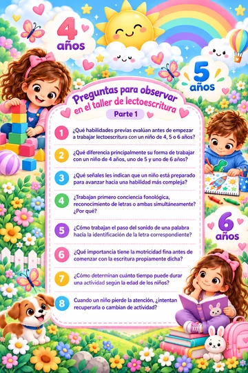
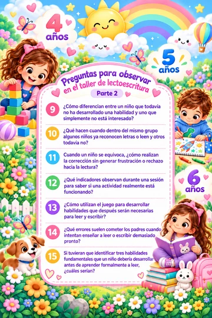
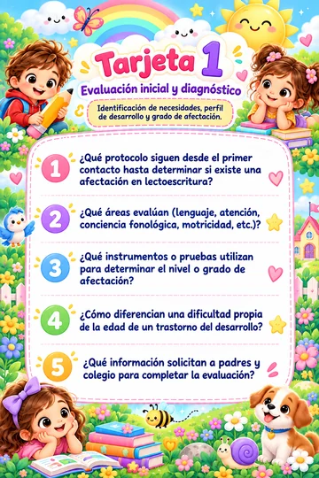
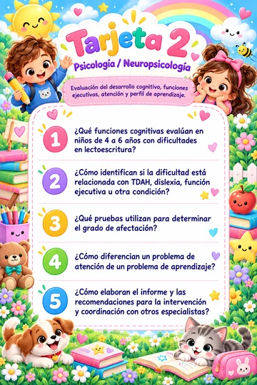
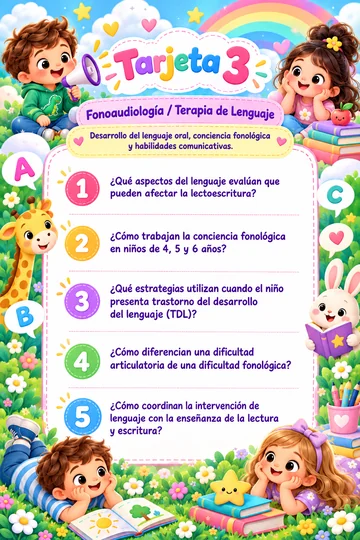
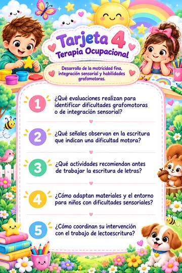
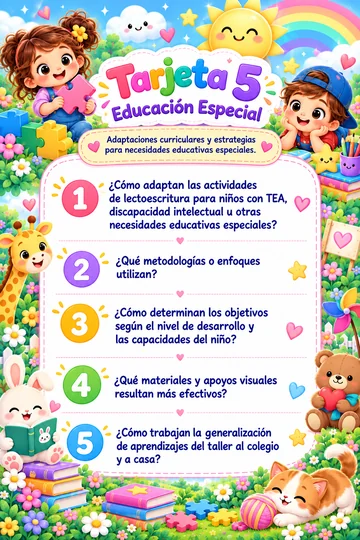
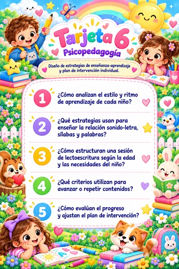
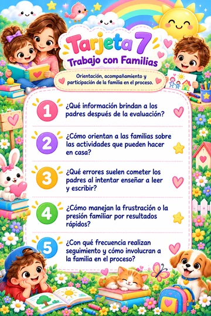
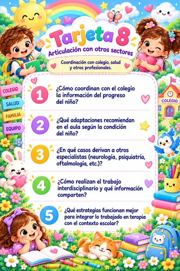

Banco visual de preguntas
Preguntas que responder
Aquí se reúne el material preparado para observar, preguntar y comprender mejor la atención en lectoescritura. En computadora, pasa el cursor sobre una tarjeta para ampliarla; también puedes hacer clic para verla a pantalla grande.









